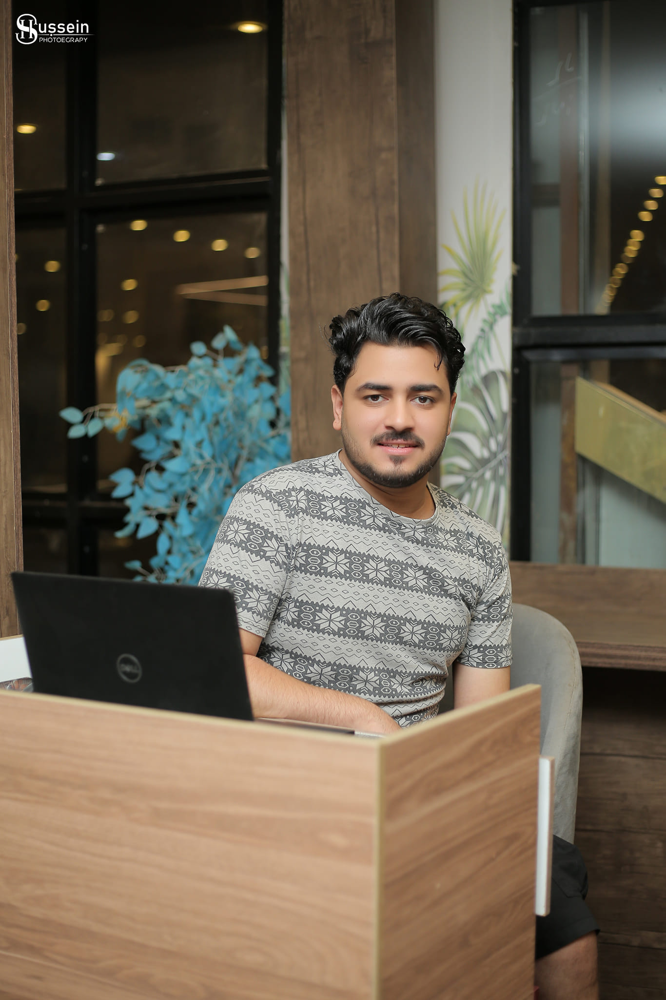

Results-driven Technical Support Engineer and IT Support Specialist with 5+ years of progressive experience across enterprise IT environments, international customer operations, and major telecommunications infrastructure. Proven in multi-platform system administration, end-to-end troubleshooting, and telecom operations at Orange, Telecom Egypt (WE), and Vodafone Egypt.

I specialize in tier1-tier2 remote IT support for 200+ international users across Europe & GCC, Active Directory & Azure AD, and broadband/telecom diagnostics (ADSL/VDSL, Fiber, SELT). Experienced in ITIL service management frameworks, ServiceNow, Jira, and telecom BSS/OSS suites to drive customer satisfaction, optimize ticket resolution, and resolve complex escalations.
Windows 10/11, Windows Server, macOS, Active Directory, Azure AD, User Accounts & Permissions, GPO, Hardware/Software Diagnostics, Remote Support, ITIL 4 Framework
TCP/IP, DNS, DHCP, VPN, LAN/WAN, Wi-Fi Configuration, Router/Switch Configuration, VLAN Fundamentals, Port Forwarding
Fixed Line, ADSL/VDSL, Broadband, Fiber Optics, VoIP, DSL Diagnostics, SELT, SNR, Line Attenuation, Sync Speed, Line Errors
ServiceNow, Jira, Customer360, Matrix, Assia DSL Diagnostic Suite, TTS, BSS, CRM
Incident Management, SLA Management, Technical Ticket Lifecycle, Work Order Execution, Technical Escalation Management, Onsite Activation
Domain Registration & DNS Setup, Web Hosting Configuration, Basic Website Deployment, Basic SQL Querying, Linux, PowerShell, Python Fundamentals, HTML/CSS, Basic Cybersecurity, Microsoft Azure Fundamentals (AZ-900), AWS Fundamentals (In Progress)
Bachelor's Degree in Public Law 2015 – 2020
Technical qualifications and proficiency established through industry certifications, hands-on enterprise IT support experience, and multi-year telecom operations leadership.Open to international relocation (requires employer visa sponsorship). Available for remote & onsite roles in IT Support, Technical Support Engineering, Network & Telecom Operations. For privacy, phone number is hidden - please use the contact form below.